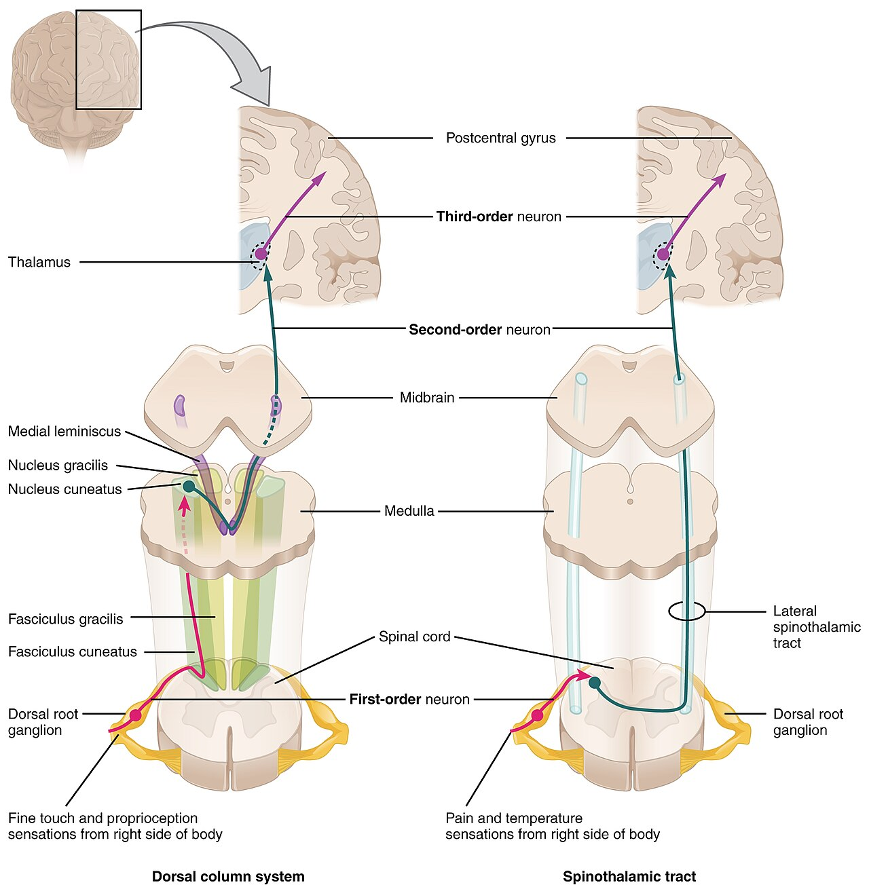
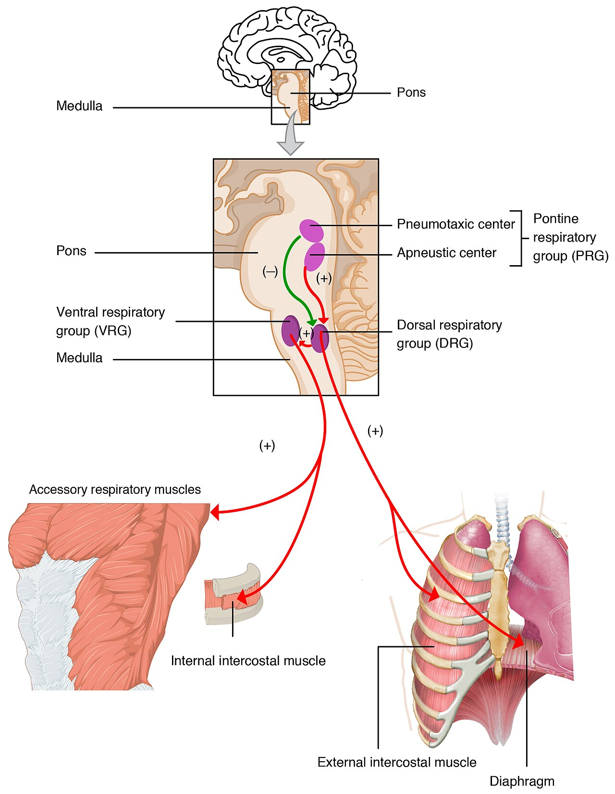
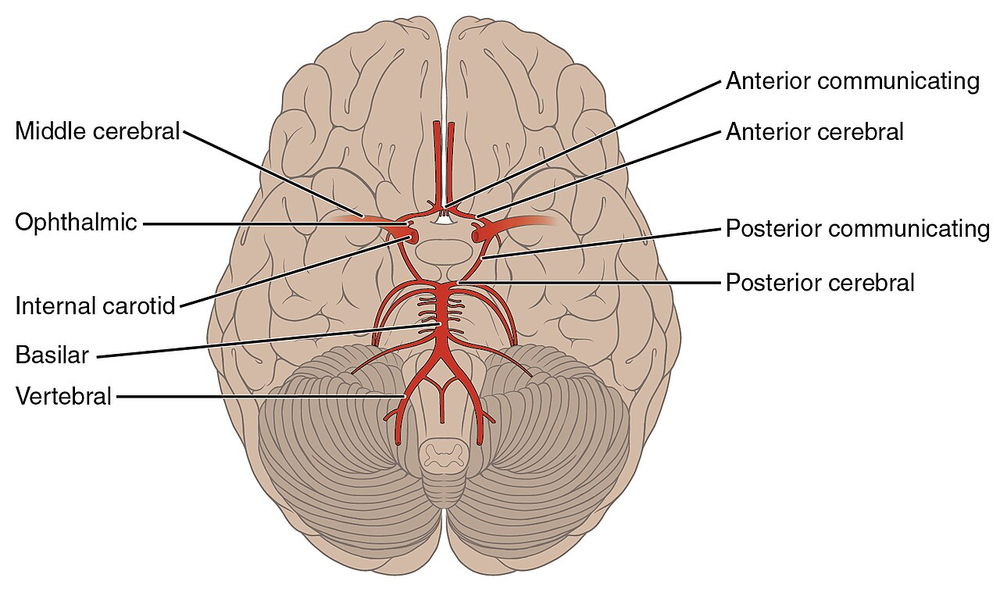

Pain & Substance Use
Pain is the reason most people come to us, and relieving it is one of the few things a nurse does that the patient feels within minutes. It is also one of the most dangerous things we do: the drugs that treat pain best are the drugs that stop breathing, poison livers, bleed stomachs, and, for some patients, begin a story that ends in a substance use disorder. This chapter walks the whole arc — how pain is generated and how we measure something we cannot see, the non-opioids with their hard ceilings and quiet toxicities, the opioids with no ceiling at all, the adjuvants that treat pain the classic analgesics cannot touch, and finally the substances people use and the withdrawal syndromes that land them in your care. Along the way, one theme repeats: the drug is only half of it. The other half is the nurse who assesses, monitors, teaches, and refuses to look away.
By the end of this chapter you can
- Describe the four steps of nociception and explain where each class of analgesic interrupts them.
- Distinguish acute from chronic pain and nociceptive from neuropathic pain, and match each to the drug that works.
- Select an appropriate pain scale for a verbal adult, a young child, a nonverbal patient, and a critically ill intubated patient.
- Explain the ceiling effect of non-opioid analgesics and the toxicities of acetaminophen and NSAIDs, including their antidotes and monitoring.
- Compare opioid full agonists, partial agonists, agonist-antagonists, and antagonists, and describe the nursing response to opioid-induced respiratory depression.
- Differentiate tolerance, physical dependence, and substance use disorder, and use accurate, non-stigmatizing language.
- Explain how adjuvant analgesics and triptans work, and teach a patient to use them safely.
- Recognize alcohol, opioid, sedative, and stimulant withdrawal, and name the treatment agents for each.
Section 1Pain and how we assess it

Nociception: four steps, four places to intervene
Pain begins as a physical event and ends as a personal one. The physical part, nociception, happens in four steps, and it is worth learning them as four steps because each analgesic class you will meet in this chapter interrupts a different one.
Transduction is the moment tissue injury becomes an electrical signal. Damaged cells spill potassium, hydrogen ions, bradykinin, histamine, and — importantly — prostaglandins, which do not cause pain so much as lower the threshold of the free nerve endings called nociceptors, so that even a light touch on sunburned skin screams. This is precisely where NSAIDs act: block prostaglandin production and you raise the threshold back toward normal.
Transmission carries that signal to the spinal cord along two very different fibers. Thin, myelinated A-delta fibers conduct fast and deliver the sharp, bright, well-localized "ouch" you feel the instant you touch a hot pan. Unmyelinated C fibers conduct slowly and deliver the dull, burning, aching, poorly localized misery that arrives a second later and stays. In the dorsal horn of the spinal cord, these fibers release glutamate and substance P onto second-order neurons, which cross the midline and ascend the spinothalamic tract to the thalamus. Opioids act mostly here and above, damping the release of substance P and hyperpolarizing the receiving neuron.
Perception is the thalamus relaying to the somatosensory cortex (where is it, how bad), the limbic system (how much do I hate it), and the frontal lobe (what does this mean for me). This is why the same stimulus hurts more when a patient is frightened, exhausted, or alone — and why a warm blanket, an explanation, and a hand on the shoulder are not "soft" interventions but real ones.
Modulation is the body pushing back. From the periaqueductal gray in the midbrain, descending fibers release serotonin and norepinephrine onto the dorsal horn and turn the volume down, and interneurons there release the body's own opioids — endorphins, enkephalins, and dynorphins — onto the very receptors that morphine occupies. Understanding modulation explains an otherwise strange fact: antidepressants that boost serotonin and norepinephrine relieve pain, not because the patient is depressed, but because they strengthen the body's own descending brake. It also explains gate control theory — rubbing a bumped elbow fires large touch fibers that partially close the dorsal-horn "gate" on the pain signal, which is the physiology behind massage, heat, cold, and TENS units.
Acute, chronic, nociceptive, neuropathic
Acute pain has an obvious cause, a predictable course, and an end: it protects, it warns, it resolves as tissue heals. It usually comes with a sympathetic surge — tachycardia, hypertension, diaphoresis, guarding. Chronic pain persists beyond the expected healing time, conventionally about three months. It has often outlived its usefulness, and here is the trap that costs patients dearly: the sympathetic signs are gone. The nervous system adapts. A patient with chronic pain can be sitting quietly with a heart rate of 68, smiling at her grandson on a video call, and be in genuine 8-out-of-10 pain. Nurses who use vital signs and facial expression as a lie detector will under-treat exactly the patients who suffer most.
Cutting a different direction: nociceptive pain comes from actual tissue damage detected by intact nerves and responds well to the classic analgesics. It splits into somatic (skin, muscle, bone — sharp, aching, easy to point to) and visceral (organs — cramping, squeezing, deep, poorly localized, often referred to a distant skin area, like the left arm in myocardial infarction). Neuropathic pain is different in kind: the nerve itself is damaged or misfiring, so the alarm rings with no fire. Patients describe it as burning, shooting, electric, pins-and-needles, or numb-but-painful, and — this is the clinically vital part — it responds poorly to opioids and NSAIDs and well to adjuvants (Section 4). Diabetic neuropathy, postherpetic neuralgia, phantom limb, sciatica, and chemotherapy-induced neuropathy all live here.
| Pain type | How patients describe it | Classic examples | What actually works |
|---|---|---|---|
| Somatic (nociceptive) | Sharp, aching, throbbing; easy to point to | Surgical incision, fracture, bone metastases | NSAIDs, acetaminophen, opioids |
| Visceral (nociceptive) | Cramping, squeezing, deep, diffuse; often referred | Bowel obstruction, renal colic, MI, labor | Opioids; antispasmodics; treat the cause |
| Neuropathic | Burning, shooting, electric, tingling, numb yet painful | Diabetic neuropathy, postherpetic neuralgia, phantom limb | Adjuvants — gabapentinoids, TCAs, SNRIs, lidocaine patch |
| Breakthrough | Sudden flare over controlled baseline pain | Cancer pain during a dressing change | Short-acting opioid on top of the long-acting baseline |
| Chronic (any origin) | Persistent past healing; normal vital signs | Low back pain, fibromyalgia, osteoarthritis | Multimodal: non-opioid + adjuvant + non-drug; opioids last |
Measuring something you cannot see
Pain is subjective. The patient's self-report is the gold standard — pain is whatever the experiencing person says it is, existing whenever they say it does. Your job is not to verify it but to characterize it, and a structured assessment does that: onset, provocation and palliation, quality, region and radiation, severity, timing, and effect on function (the mnemonics OLDCARTS and PQRST both get you there). The last item — function — is the one students skip and the one that matters most in chronic pain, where "Can you sleep? Can you get to the bathroom? Can you play with your grandkids?" is a better outcome measure than any number.
Then pick a scale that matches the patient in front of you. A number means nothing if the patient cannot give you one, and defaulting to the 0–10 scale for a toddler, a patient with advanced dementia, or an intubated ICU patient is how pain gets missed.
| Scale | Who it is for | What you actually do |
|---|---|---|
| Numeric rating (NRS) 0–10 | Verbal adults, older children | Ask for a number; also ask their acceptable goal (e.g., "a 3 lets me sleep") |
| Wong-Baker FACES / FPS-R | Children roughly 3 years and up; adults with language barriers | Patient points to a face — their face, not your read of their expression |
| FLACC | Nonverbal patients; children ~2 months to 7 years | Score Face, Legs, Activity, Cry, Consolability (0–10) |
| CRIES | Neonates | Crying, oxygen Requirement, Increased vitals, Expression, Sleeplessness |
| PAINAD | Advanced dementia | Observe breathing, vocalization, expression, body language, consolability |
| CPOT / BPS | Critically ill, intubated, sedated | Behavioral observation — never vital signs alone |
Assessment does not end when the pill is swallowed. Reassess: roughly 15–30 minutes after an IV dose, about 60 minutes after an oral dose, and at peak effect for anything else. Chart the reassessment. An unreassessed analgesic is an unfinished intervention, and in a court record it looks exactly like one.
Finally, the modern framework: multimodal analgesia. Rather than climbing the opioid dose, stack drugs with different mechanisms — scheduled acetaminophen plus an NSAID plus a nerve block plus gabapentin plus ice and repositioning — so each does part of the work at a lower, safer dose. The old WHO analgesic ladder (non-opioid → add weak opioid → strong opioid, with adjuvants at every rung) still teaches the principle: start low, add rather than replace, and never skip the non-drug rung.
- Nociception = transduction → transmission → perception → modulation; NSAIDs act at transduction, opioids at transmission/perception, adjuvants and endorphins at modulation.
- A-delta = fast, sharp, localized; C fibers = slow, dull, diffuse; both synapse in the dorsal horn and ascend the spinothalamic tract.
- Neuropathic pain responds poorly to opioids and NSAIDs and well to adjuvants — recognizing "burning, shooting, electric" changes the prescription.
- Self-report is the gold standard; match the scale to the patient (NRS, FACES, FLACC, CRIES, PAINAD, CPOT) and always reassess after the dose.
Section 2Non-opioid analgesics

The ceiling effect, and why it matters
Non-opioid analgesics share a property opioids do not have: a ceiling effect. Past a certain dose, the analgesia stops improving — the enzyme they inhibit is already fully inhibited — but the toxicity keeps climbing in a straight line. Six ibuprofen do not relieve more pain than three; they only bleed more stomachs. Six grams of acetaminophen do not relieve more pain than three; they only kill more hepatocytes. This is the single most important patient-teaching point in the whole class, because the intuitive human response to inadequate relief is to take more. The correct response is to add a different mechanism, not more of the same one.
Their other shared virtues: they do not cause respiratory depression, they do not cause dependence, they do not sedate, and they are the foundation the rest of the analgesic plan is built on. Scheduled acetaminophen around the clock after surgery measurably lowers the opioid a patient needs — that is called opioid sparing, and it is the whole point.
Acetaminophen: the gentle one that destroys livers
Acetaminophen (paracetamol; Tylenol) relieves pain and lowers fever, apparently by inhibiting cyclooxygenase centrally in the CNS. What it does not do is as important as what it does: it has essentially no anti-inflammatory effect, no antiplatelet effect, and it does not ulcerate the stomach or injure the kidney the way NSAIDs do. That makes it the analgesic of choice for people who cannot take NSAIDs — patients with peptic ulcer disease, chronic kidney disease, bleeding risk, anticoagulation, heart failure — and the first-line antipyretic for children. For osteoarthritis it is a reasonable first trial and the safest option when NSAIDs are contraindicated, but be honest about the evidence: current guidelines favor topical or oral NSAIDs, because acetaminophen's benefit in osteoarthritis is modest at best.
The danger is dose. Most acetaminophen is glucuronidated and sulfated into harmless metabolites, but a small fraction goes through CYP2E1 to a vicious intermediate called NAPQI, which glutathione immediately neutralizes. Overwhelm the dose — or start with a glutathione reserve already depleted by chronic alcohol use, malnutrition, or fasting — and NAPQI runs out of chaperones and binds hepatocytes directly, producing centrilobular hepatic necrosis. Acetaminophen is the leading cause of acute liver failure in the United States, and a great deal of it is accidental.
Accidental, because acetaminophen hides. It is inside oxycodone/acetaminophen and hydrocodone/acetaminophen tablets, inside nighttime cold-and-flu powders, inside sinus tablets and menstrual formulas. A patient who takes two Percocet every six hours and a NyQuil at bedtime and two Tylenol for a headache has not been careless — they have been sold a maze. Your job is to add up every source. The healthy-adult maximum is 4 g in 24 hours, but many clinicians teach a more conservative 3 g/day, and in chronic liver disease, chronic heavy alcohol use, or frailty, 2 g/day or less.
Overdose is deceptive in the first day: nausea, vomiting, diaphoresis, malaise, or nothing at all, while the liver is already being injured. At 24–72 hours the right upper quadrant hurts and AST/ALT climb; at 72–96 hours hepatotoxicity peaks with jaundice, coagulopathy, encephalopathy, and possibly death. The antidote is acetylcysteine, which restores glutathione stores — and it is dramatically most effective when started within 8–10 hours of ingestion. Do not wait for symptoms and do not wait for the level to be "impressive." Get a 4-hour post-ingestion level, plot it on the Rumack-Matthew nomogram, and start acetylcysteine if there is any doubt. Oral acetylcysteine smells and tastes like rotten eggs; the IV form can cause an anaphylactoid reaction (flushing, wheeze, hypotension) that is usually managed by slowing the infusion rather than stopping the drug.
NSAIDs: three drugs in one, and a toxicity for each organ
NSAIDs inhibit cyclooxygenase and so shut down prostaglandin synthesis. Because prostaglandins sensitize nociceptors, drive inflammation, and reset the hypothalamic thermostat, one drug buys you three effects: analgesic, anti-inflammatory, and antipyretic. That anti-inflammatory action is exactly what acetaminophen lacks and exactly why NSAIDs beat it for sprains, gout, dysmenorrhea, renal colic, and inflammatory arthritis.
The problem is that COX comes in two flavors and the useful one is not the only one you hit. COX-1 is the housekeeper: its prostaglandins protect gastric mucosa, maintain renal blood flow, and enable platelet aggregation (via thromboxane A2). COX-2 is mostly induced at sites of inflammation. A nonselective NSAID blocks both — you get the relief from COX-2 inhibition and the toxicity from COX-1 inhibition. That single sentence explains every adverse effect on the list:
- GI: dyspepsia, erosions, peptic ulcer, and painless GI bleeding (the drug is an analgesic — it masks the warning). Take with food or milk; add a PPI in high-risk patients; teach patients to report black tarry stools or coffee-ground emesis.
- Renal: prostaglandins dilate the afferent arteriole. Remove them from a patient who is dehydrated, elderly, or in heart failure and glomerular filtration falls — acute kidney injury. Watch for the "triple whammy": an ACE inhibitor or ARB + a diuretic + an NSAID together is a well-known recipe for AKI. Monitor creatinine, urine output, and weight.
- Cardiovascular: a boxed warning for increased risk of myocardial infarction and stroke, worse at higher doses and longer duration, and contraindicated for perioperative pain in CABG surgery. NSAIDs also cause sodium and water retention — they raise blood pressure and destabilize heart failure.
- Bleeding: impaired platelet function; hold before surgery per protocol; additive with anticoagulants.
- Respiratory: can trigger bronchospasm in aspirin-exacerbated respiratory disease (the asthma / nasal polyps / aspirin-sensitivity triad).
Celecoxib is COX-2 selective, so it spares the stomach considerably — but it still carries renal and cardiovascular risk, and because it is a sulfonamide, ask about sulfa allergy. Ketorolac is the outlier worth memorizing: an injectable NSAID with genuinely opioid-like potency for acute pain, which is wonderful, and a correspondingly brutal GI and renal risk profile, which is why total therapy — all routes combined — is limited to 5 days.
Aspirin belongs here but behaves differently. It inhibits COX irreversibly, so a single dose disables a platelet for its entire 7–10 day life — useless as a feature when you want analgesia, invaluable when you want cardioprotection at low dose. Two aspirin-specific alarms: Reye syndrome, an acute encephalopathy with fatty liver, means aspirin is avoided in children and teens with a viral illness (influenza, varicella), and salicylism — tinnitus, hearing loss, dizziness, hyperventilation — is the early warning of toxicity. Ringing in the ears is a drug level, not a coincidence.
| Drug (class) | Prototype effect | Key effect | Nursing alert |
|---|---|---|---|
| Acetaminophen | Central COX inhibition | Analgesic + antipyretic only; no anti-inflammatory, no antiplatelet | Add up every source; max 4 g/day healthy adult, 2 g/day or less in liver disease. Antidote: acetylcysteine |
| Ibuprofen (nonselective NSAID) | COX-1 + COX-2 inhibition | Analgesic, anti-inflammatory, antipyretic | Take with food; watch GI bleed, creatinine, BP; ceiling effect — more is not better |
| Naproxen (nonselective NSAID) | COX-1 + COX-2, long acting | Twice-daily dosing for arthritis | Same GI/renal/CV cautions; longer half-life means longer risk |
| Ketorolac (nonselective NSAID) | Potent injectable NSAID | Opioid-sparing for acute pain | 5-day maximum, all routes combined; high GI bleed and AKI risk |
| Celecoxib (COX-2 selective) | Spares COX-1 | Much less GI injury; no antiplatelet effect | Sulfonamide — ask about sulfa allergy; CV and renal risk remain |
| Aspirin (salicylate) | Irreversible COX inhibition | Antiplatelet for the platelet's 7–10 day life | Reye syndrome — avoid in febrile children/teens; tinnitus = early toxicity |
- Non-opioids have a ceiling effect: beyond the max dose, toxicity rises but analgesia does not. Add a mechanism, do not add milligrams.
- Acetaminophen = analgesic + antipyretic, no anti-inflammatory or antiplatelet action; the danger is cumulative dose and hidden combination products. Antidote is acetylcysteine, best within 8–10 hours.
- NSAIDs block COX → analgesic, anti-inflammatory, antipyretic; COX-1 blockade explains the GI, renal, bleeding, and heart-failure toxicity.
- Memory hooks: ketorolac 5 days, celecoxib = sulfa, aspirin = Reye + tinnitus, NSAID + ACE inhibitor + diuretic = AKI.
Section 3Opioids

One receptor family, every effect on the list
Opioids work because the body already has an opioid system — endorphins, enkephalins, and dynorphins acting at receptors we borrow. The one that matters most is the mu receptor, and nearly everything you need to know about opioids falls out of a single fact: analgesia and respiratory depression come from the same receptor. You cannot have one without risking the other. Mu activation gives analgesia, euphoria, sedation, respiratory depression, constipation, miosis, and physical dependence. Kappa activation gives analgesia and sedation but tends toward dysphoria rather than euphoria. Delta contributes to analgesia and mood.
Opioids come in four flavors, and knowing which one is in your hand tells you what will happen:
- Full agonists — morphine (the prototype), hydromorphone, fentanyl, oxycodone, hydrocodone, methadone, codeine, tramadol. These have no analgesic ceiling: increase the dose and you get more relief — and more respiratory depression. Nothing but the patient's tolerance and your monitoring stands between the two.
- Partial agonist — buprenorphine. It binds mu tightly but activates it only partly, so it has a ceiling on respiratory depression, which makes it comparatively safe. Because it binds so tightly, it will displace a full agonist and can precipitate withdrawal in someone who is opioid-dependent.
- Agonist-antagonists — butorphanol, nalbuphine (kappa agonist, mu antagonist). Ceiling on respiratory depression, lower abuse potential, more dysphoria — and, again, they can precipitate withdrawal in a patient on a full agonist. Never give nalbuphine casually to a patient on chronic morphine.
- Antagonists — naloxone, naltrexone, and the peripherally acting methylnaltrexone and naloxegol. They occupy the receptor and do nothing.
Respiratory depression: sedation comes first
Opioids blunt the medullary chemoreceptors' response to rising carbon dioxide, so the patient simply stops feeling the urge to breathe. Here is the point that saves lives and that students consistently get backwards on exams and at the bedside: sedation precedes respiratory depression. The respiratory rate is a late sign. By the time you count 6 breaths a minute, you are already late. The early sign is a patient who is unusually drowsy, who drifts off mid-sentence, who needs a shake instead of a word. That is why the POSS (Pasero Opioid-induced Sedation Scale) exists: assess sedation on every opioid check, and when the patient becomes difficult to arouse, hold the next dose and notify — before the rate falls.
Risk stacks: opioid-naive patients, the first 24 hours of therapy, obesity or untreated obstructive sleep apnea, age, renal or hepatic impairment, and above all co-administered CNS depressants — benzodiazepines, alcohol, sedating antihistamines, gabapentinoids, muscle relaxants. The opioid-plus-benzodiazepine combination carries a boxed warning for a reason.
The classic overdose triad is depressed level of consciousness, pinpoint pupils, and respiratory depression. The reversal agent is naloxone: IV onset in 1–2 minutes, also given IM, subcutaneously, or intranasally by a bystander. Two things about naloxone must be automatic. First, titrate to respiratory rate, not to consciousness — dumping a full dose into a patient in pain strips every receptor at once and produces agony, vomiting, hypertension, tachycardia, and in the opioid-dependent, violent precipitated withdrawal. Second, and more dangerous: naloxone's duration (roughly 30–90 minutes) is shorter than most opioids. The patient wakes up, everyone relaxes, the naloxone wears off, and the opioid that is still on board re-sedates them. Every naloxone administration is followed by continued monitoring and, often, repeat doses or an infusion. This is also the entire teaching point of take-home naloxone kits: give the dose, then call emergency services and stay.
The rest of the effect list, and the traps
Constipation deserves its own paragraph because it is the effect to which tolerance never develops. Every other opioid effect fades with time; the bowel does not adapt. A patient on chronic opioids without a bowel regimen is a patient headed for impaction. Start a stimulant laxative (senna) with or without a stool softener on the same order as the opioid, not after the problem appears. For refractory opioid-induced constipation, the peripherally acting antagonists — methylnaltrexone, naloxegol — block gut mu receptors without crossing into the brain, so the bowel moves and the analgesia stays.
Also expect nausea and vomiting (usually tolerance develops in days), pruritus and flushing from histamine release (worst with morphine — it is not an allergy), urinary retention, orthostatic hypotension, miosis, and biliary spasm.
Individual drugs carry individual traps. Morphine has an active metabolite that accumulates in renal impairment — prolonged sedation, so hydromorphone or fentanyl is usually preferred as kidney function falls. Meperidine produces the neurotoxic metabolite normeperidine, which causes tremors and seizures, and it is avoided in older adults and renal impairment; it has largely been abandoned. Codeine and tramadol are prodrugs activated by CYP2D6, which varies enormously between people: ultrarapid metabolizers generate a surge of active drug, which is why both are contraindicated in children under 12 and after tonsillectomy or adenoidectomy in anyone under 18. Tramadol also inhibits serotonin and norepinephrine reuptake — so it lowers the seizure threshold and can contribute to serotonin syndrome. Methadone has a long, unpredictable half-life (it accumulates for days after the pain relief has faded) and prolongs the QT interval. Fentanyl transdermal patches are for opioid-tolerant patients only — never opioid-naive, never acute pain: onset takes 12–24 hours, and heat (fever, heating pad, hot bath, sauna) accelerates absorption into an overdose. Remove the old patch when applying the new one, and teach patients to fold used patches sticky-side together and dispose of them safely — a used patch still contains enough drug to kill a child or a pet.
| Class | Prototype | Key effect | Nursing alert |
|---|---|---|---|
| Full agonist | Morphine | Mu agonism; no analgesic ceiling | Sedation before respiratory depression; active metabolite accumulates in renal failure; start a bowel regimen day one |
| Full agonist, potent | Fentanyl / hydromorphone | Rapid onset (fentanyl); high potency per mg | High-alert — do not confuse mg with mcg; patch is for opioid-tolerant only; heat increases patch absorption |
| Full agonist, prodrug | Codeine / tramadol | Needs CYP2D6 activation; tramadol also blocks serotonin/NE reuptake | Contraindicated <12 years and post-tonsillectomy <18; tramadol lowers seizure threshold, serotonin syndrome risk |
| Full agonist, long/variable | Methadone | Long, unpredictable half-life; used for OUD and pain | Accumulates for days; QT prolongation — get an ECG; for OUD, dispensed by certified programs |
| Partial agonist | Buprenorphine | Tight binding, ceiling on respiratory depression | Can precipitate withdrawal if given too soon after a full agonist — wait for moderate withdrawal |
| Agonist-antagonist | Nalbuphine / butorphanol | Kappa agonist, mu antagonist; ceiling on respiratory depression | Precipitates withdrawal in opioid-dependent patients; dysphoria |
| Antagonist | Naloxone | Reverses all opioid effects within 1–2 minutes IV | Duration is shorter than the opioid — the patient can re-sedate. Titrate to respiratory rate; keep monitoring |
| Antagonist, peripheral | Methylnaltrexone / naloxegol | Blocks gut mu receptors only | Relieves opioid-induced constipation without reversing analgesia |
Tolerance, dependence, and the words we use
Three phenomena get confused constantly, and the confusion harms patients. Tolerance is pharmacologic: the same dose produces less effect over time, so the dose must rise. Physical dependence is also pharmacologic: the body has adapted, and abrupt cessation or an antagonist produces a withdrawal syndrome. Both are expected, normal, predictable responses to sustained opioid exposure and neither one means addiction. Opioid use disorder is a diagnosable condition defined by compulsive use, loss of control, craving, and continued use despite harm. A patient with metastatic cancer on 200 mg of morphine a day is tolerant and physically dependent and, in all likelihood, not addicted at all. There is also pseudoaddiction: a genuinely under-treated patient who watches the clock, requests specific drugs, and looks "drug-seeking" — and whose behavior evaporates the moment the pain is adequately treated.
Opioids are high-alert medications. That means independent double checks per policy, careful attention to mg-versus-mcg, and, with patient-controlled analgesia (PCA), one absolute rule: only the patient presses the button. "PCA by proxy" — a well-meaning family member pushing the button for a sleeping patient — defeats the built-in safety feature (a patient too sedated to press cannot overdose themselves) and has killed people. Teach the patient and the family, keep naloxone and a bag-valve mask accessible, and monitor sedation, respiratory rate, and pulse oximetry (with capnography for high-risk patients).
- Mu receptor activation produces analgesia and respiratory depression — the benefit and the risk are inseparable; full agonists have no analgesic ceiling.
- Sedation precedes respiratory depression — assess sedation (POSS), not just respiratory rate. Overdose triad: depressed LOC, pinpoint pupils, slow breathing.
- Naloxone reverses in 1–2 minutes but lasts only 30–90 minutes — monitor for re-sedation and titrate to respiratory rate, not consciousness.
- Tolerance develops to nearly everything except constipation — start a stimulant laxative with the first opioid order.
- Tolerance and physical dependence are expected and are not addiction; opioid use disorder is compulsive use despite harm.
Section 4Adjuvants and migraine drugs

What an adjuvant is, and why it is not a consolation prize
An adjuvant analgesic (or co-analgesic) is a drug whose day job is something else — treating seizures, depression, inflammation, muscle spasm — but which relieves pain in particular situations. Students sometimes read that as "second string." It is the opposite. For neuropathic pain, adjuvants are first-line and opioids are the disappointing option. When a nerve is the problem, adding morphine mostly adds sedation and constipation; adding gabapentin or duloxetine adds relief.
The gabapentinoids, gabapentin and pregabalin, bind the alpha-2-delta subunit of voltage-gated calcium channels on overexcited neurons and reduce the release of excitatory neurotransmitters — they turn down a nerve that is shouting. They are used for diabetic neuropathy, postherpetic neuralgia, fibromyalgia (pregabalin), and increasingly as part of multimodal postoperative regimens. Expect dizziness, somnolence, ataxia, peripheral edema, weight gain, and blurred vision; both are renally cleared, so dose must be reduced in kidney impairment and older adults are far more sensitive. Two safety points: do not stop them abruptly (taper — abrupt withdrawal can trigger seizures in patients using them for epilepsy), and respect the labeled warning about serious respiratory depression when combined with opioids or other CNS depressants, especially in the elderly or in COPD. Pregabalin is a controlled substance (schedule V).
The antidepressants work by strengthening the descending inhibitory pathway from Section 1 — more serotonin and norepinephrine in the dorsal horn means a stronger brake. Tricyclics (amitriptyline, nortriptyline) are effective at doses well below antidepressant doses, and their anticholinergic burden is the limiting factor: dry mouth, constipation, urinary retention, blurred vision, orthostatic hypotension, sedation, and QT prolongation. Nortriptyline is better tolerated in older adults. SNRIs — duloxetine especially — are cleaner and carry indications for diabetic peripheral neuropathy, fibromyalgia, and chronic musculoskeletal pain. Teach patients that these are being given for pain, not because you think the pain is "in their head" — that single sentence prevents a great deal of nonadherence — and that relief takes days to weeks, unlike an analgesic.
Rounding out the toolbox: carbamazepine is first-line for trigeminal neuralgia (watch for hyponatremia, agranulocytosis, and severe skin reactions, with HLA-B*1502 screening in at-risk ancestries); corticosteroids such as dexamethasone shrink the inflammation around a compressed nerve, a bone metastasis, or a brain tumor; a lidocaine 5% patch numbs a localized area (postherpetic neuralgia) with almost no systemic exposure; capsaicin depletes substance P; bisphosphonates ease metastatic bone pain; low-dose ketamine blocks NMDA receptors for opioid-refractory and neuropathic pain; and muscle relaxants (cyclobenzaprine, tizanidine, baclofen) treat spasm-driven pain — with the standing warning that abrupt withdrawal of intrathecal baclofen is a life-threatening emergency.
Migraine: abort it or prevent it — two entirely different jobs
Migraine is not "a bad headache." It is a neurovascular event: trigeminal nerve activation releases calcitonin gene-related peptide (CGRP) and other neuropeptides, cranial vessels dilate, sterile perivascular inflammation follows, and the result is throbbing unilateral pain with nausea, photophobia, and phonophobia, sometimes preceded by aura. Drugs split cleanly into two jobs, and confusing them is the most common patient error you will correct.
Abortive (acute) therapy stops an attack in progress. Triptans — sumatriptan is the prototype — are serotonin 5-HT1B/1D agonists: they constrict the dilated cranial vessels, suppress the release of inflammatory neuropeptides, and quiet trigeminal transmission. The teaching is simple and non-negotiable: take it at the first sign of the headache, because a triptan given late into a full attack works poorly. Available oral, nasal, and subcutaneous — the injection matters when vomiting makes a pill useless. Expect flushing, tingling, warmth, and the classic "triptan sensations" of chest, neck, or jaw tightness. That chest tightness is usually benign, but because triptans constrict blood vessels, they are contraindicated in coronary artery disease, prior MI or stroke, uncontrolled hypertension, peripheral vascular disease, and hemiplegic or basilar migraine, and must not be combined with an ergot within 24 hours. Ergotamine and dihydroergotamine are older, less selective vasoconstrictors — more nausea, risk of ergotism, contraindicated in pregnancy and with strong CYP3A4 inhibitors. Newer options avoid vasoconstriction entirely: the gepants (ubrogepant, rimegepant) block the CGRP receptor and are usable in patients with cardiovascular disease, and the ditan lasmiditan targets 5-HT1F without constricting vessels but causes enough dizziness that patients must not drive for 8 hours.
Preventive (prophylactic) therapy is taken every day whether or not there is a headache, and is considered when attacks are frequent, disabling, or abortives are failing. The mainstays are propranolol or metoprolol, topiramate (paresthesias, cognitive fog, weight loss, kidney stones, teratogenic), valproate (contraindicated in pregnancy), amitriptyline, the CGRP monoclonal antibodies (erenumab, fremanezumab, galcanezumab, eptinezumab — monthly or quarterly injections), and onabotulinumtoxinA for chronic migraine. Set expectations: prevention is judged over 8–12 weeks and success means fewer, milder attacks, not zero.
One more thing to teach every migraine patient: medication overuse headache. Using acute treatments too often — roughly more than 10–15 days a month, depending on the drug — produces a chronic daily headache driven by the treatment itself. A patient reaching for a triptan or a combination analgesic most days needs prevention, not a bigger acute prescription.
| Class | Prototype | Key effect | Nursing alert |
|---|---|---|---|
| Gabapentinoid | Gabapentin / pregabalin | Binds alpha-2-delta calcium channel subunit; calms neuropathic firing | Dizziness, somnolence, edema; renal dose adjustment; fall risk; taper — do not stop abruptly; respiratory depression with opioids |
| Tricyclic antidepressant | Amitriptyline / nortriptyline | Boosts descending serotonin/NE inhibition at low doses | Anticholinergic effects, orthostasis, QT; give at bedtime; caution in older adults |
| SNRI | Duloxetine | Diabetic neuropathy, fibromyalgia, chronic musculoskeletal pain | Takes days to weeks; teach "this is for pain"; do not stop abruptly |
| Anticonvulsant | Carbamazepine | First-line for trigeminal neuralgia | Hyponatremia, agranulocytosis, severe rash (HLA-B*1502); many interactions |
| Corticosteroid | Dexamethasone | Shrinks inflammation around nerve, bone, or tumor | Hyperglycemia, infection risk, insomnia; give in the morning |
| Topical / local | Lidocaine 5% patch | Localized block with minimal systemic drug | Postherpetic neuralgia; apply to intact skin; follow on/off schedule |
| Triptan (abortive) | Sumatriptan | 5-HT1B/1D agonist — constricts cranial vessels, blocks neuropeptide release | Take at first sign; contraindicated in CAD, prior MI/stroke, uncontrolled HTN; chest tightness is common; no ergot within 24 h |
| Gepant / ditan (abortive) | Ubrogepant / lasmiditan | CGRP receptor block / 5-HT1F agonism — no vasoconstriction | Options when triptans are contraindicated; lasmiditan — no driving for 8 hours |
| Prophylaxis | Propranolol / topiramate / CGRP mAbs | Taken daily (or monthly) to reduce attack frequency | Not for an acute attack; judge over 8–12 weeks; topiramate and valproate are teratogenic |
- Adjuvants are first-line for neuropathic pain, not a fallback; opioids work poorly on damaged nerves.
- Gabapentin/pregabalin — renal dosing, dizziness and falls, taper on discontinuation, respiratory depression risk with opioids.
- TCAs and duloxetine relieve pain by strengthening descending inhibition, at analgesic doses lower and slower than antidepressant use.
- Triptans abort, they do not prevent — take at first sign; contraindicated in coronary artery disease and uncontrolled hypertension. Gepants and ditans avoid vasoconstriction.
- Acute migraine drugs used more than about 10–15 days a month cause medication overuse headache.
Section 5Substance use and withdrawal

The words come first
Substances of misuse are chemically unrelated to each other, but they converge on one circuit: the mesolimbic dopamine pathway that evolved to make food, safety, and connection feel worth repeating. Drugs flood it far harder than any natural reward, and with repetition the circuit rewires — the drug feels necessary and everything else feels flat. That is a description of a brain, not a character.
Which is why the language matters clinically, not just politely. Say a person with a substance use disorder, not "an addict"; a positive toxicology screen, not "dirty urine"; a person in recovery, not "clean." Patients hear stigma and stop disclosing, and a patient who will not tell you what they took is a patient you cannot keep alive. Carry Section 3's distinctions with you: tolerance (needs more for the same effect) and physical dependence (withdrawal on stopping) are pharmacology and happen to anyone; substance use disorder is compulsive use despite harm.
Alcohol: the withdrawal that kills
Alcohol is a CNS depressant that enhances inhibitory GABA-A transmission and blocks excitatory NMDA receptors. Chronically, the brain compensates by downregulating GABA and upregulating NMDA. Remove the alcohol and that compensation is suddenly unopposed — the brain is left in a state of raw excitation. That is the whole pathophysiology of alcohol withdrawal, and it is why it can be fatal.
The timeline is worth memorizing. Roughly 6–24 hours after the last drink: tremor, anxiety, insomnia, nausea, diaphoresis, tachycardia, hypertension. 12–24 hours: alcoholic hallucinosis — often visual, with the sensorium otherwise intact. 12–48 hours: withdrawal seizures, generalized tonic-clonic. 48–96 hours: delirium tremens — global confusion, agitation, hallucinations, fever, and severe autonomic instability, with real mortality even when treated. Use a validated tool (CIWA-Ar) and dose symptom-triggered.
Treatment substitutes a safer drug for the same receptor: benzodiazepines (lorazepam, diazepam, chlordiazepoxide) restore GABA tone and prevent seizures and DTs. Lorazepam is often chosen in liver disease because its metabolism is less affected. Add thiamine — and here is a rule to make reflexive: thiamine before glucose. A thiamine-depleted brain given a glucose load can be tipped into Wernicke encephalopathy (confusion, ataxia, ophthalmoplegia), which if missed becomes irreversible Korsakoff syndrome. Also replace folate and magnesium, and correct electrolytes.
For long-term treatment: naltrexone (opioid antagonist — blunts craving and reward; oral or monthly IM; requires an opioid-free interval and caution in hepatic disease), acamprosate (helps restore glutamate/GABA balance; renally dosed — useful when the liver is compromised), and disulfiram (blocks aldehyde dehydrogenase, so drinking causes an intolerable acetaldehyde reaction — flushing, throbbing headache, vomiting, tachycardia, hypotension). Disulfiram teaching is exhaustive and non-optional: no alcohol in anything — mouthwash, cough syrup, sauces, vinegars, aftershave, hand sanitizer — for at least 14 days after the last dose.
Opioids, sedatives, stimulants, nicotine
Opioid withdrawal is the mirror image of alcohol's: it is miserable but rarely lethal in an otherwise healthy adult. Yawning, lacrimation, rhinorrhea, mydriasis (the opposite of overdose's pinpoint pupils), piloerection — the gooseflesh that gives us "cold turkey" — myalgias, abdominal cramping, vomiting, diarrhea, restlessness, and profound anxiety. Score it with COWS. But do not let "not lethal" become "not important": untreated withdrawal is precisely what drives people back to use, and after even a short abstinence their tolerance has fallen — so the old dose is now a fatal dose. Withdrawal treated badly kills people at one remove.
The treatments are medications for opioid use disorder, and they are the evidence-based standard, not a moral failure: buprenorphine (usually with naloxone as an abuse deterrent) — and remember the partial-agonist trap from Section 3: give it too early and it displaces the full agonist and precipitates withdrawal, so you wait for objective moderate withdrawal; methadone, effective and dispensed for OUD through certified programs; naltrexone (extended-release IM) after a 7–10 day opioid-free interval; and clonidine or lofexidine, alpha-2 agonists that blunt the autonomic storm (watch for hypotension and sedation) without touching craving. And for every patient at risk — and their family — take-home naloxone with real teaching, not a pamphlet.
Sedative-hypnotics (benzodiazepines, barbiturates) behave like alcohol, because they share the GABA receptor: withdrawal can be life-threatening, with seizures and delirium. Never discontinue a chronic benzodiazepine abruptly — taper slowly. Flumazenil is the benzodiazepine antagonist, but it is used sparingly and rarely in chronic users or mixed overdose, because stripping GABA support can precipitate refractory seizures.
Stimulants (cocaine, methamphetamine, prescription amphetamines) do the opposite: sympathetic overdrive — hypertension, tachycardia, hyperthermia, dilated pupils, agitation, paranoia and psychosis, chest pain, myocardial infarction, stroke, and seizures. For cocaine-associated chest pain the classic teaching is benzodiazepines and nitroglycerin, and to avoid an unopposed beta blocker (blocking beta while alpha runs free can worsen coronary vasoconstriction and hypertension). Stimulant withdrawal is the "crash": not physically dangerous, but dysphoria, hypersomnia, hyperphagia, vivid dreams, agitation, ferocious craving, and depression with real suicide risk — screen for it. There is no approved pharmacotherapy; behavioral treatment and contingency management are what work.
Nicotine is the substance that drives the deadliest habit in this section. Nicotine itself is what causes the dependence; the body count comes from the combustion products inhaled alongside it, which is why smoking kills more people than every other drug here combined. Withdrawal — irritability, anxiety, poor concentration, increased appetite, craving — peaks in the first week. Treatment: nicotine replacement (a long-acting patch for the baseline plus a short-acting gum, lozenge, or inhaler for breakthrough craving is the most effective NRT strategy), varenicline (a partial agonist at the nicotinic receptor: it satisfies enough to blunt withdrawal while blocking the reward of a cigarette — expect nausea, vivid dreams, insomnia), and bupropion (which lowers the seizure threshold — contraindicated in seizure disorders and in eating disorders). Cannabis deserves a mention too: withdrawal is real if mild (irritability, insomnia, appetite loss), and cannabinoid hyperemesis syndrome — cyclic vomiting relieved by hot showers — shows up in emergency departments regularly.
| Substance | Withdrawal picture | Danger level | Treatment agents |
|---|---|---|---|
| Alcohol | Tremor/anxiety 6–24 h → seizures 12–48 h → DTs 48–96 h | Can be fatal | Benzodiazepines (CIWA-Ar guided) + thiamine before glucose, folate, magnesium; then naltrexone, acamprosate, disulfiram |
| Opioids | Yawning, lacrimation, rhinorrhea, mydriasis, piloerection, cramps, diarrhea, myalgias (COWS) | Miserable, rarely fatal — but relapse after lost tolerance is | Buprenorphine (wait for moderate withdrawal), methadone, naltrexone, clonidine/lofexidine; take-home naloxone |
| Benzodiazepines / sedatives | Anxiety, tremor, insomnia, seizures, delirium | Can be fatal | Slow taper; long-acting benzodiazepine substitution; flumazenil rarely (seizure risk) |
| Stimulants (cocaine, meth) | "Crash": dysphoria, hypersomnia, hyperphagia, craving, depression/suicidality | Not physically fatal; suicide risk is | No approved drug; contingency management. Intoxication: benzodiazepines, cooling; avoid unopposed beta blockade |
| Nicotine | Irritability, anxiety, poor concentration, appetite, craving; peaks in week 1 | Withdrawal not dangerous — but smoking is the deadliest habit here | NRT (patch + short-acting), varenicline, bupropion (lowers seizure threshold) |
| Cannabis | Irritability, insomnia, appetite loss, vivid dreams | Mild | Supportive; watch for cannabinoid hyperemesis syndrome |
- All substances of misuse converge on the mesolimbic reward pathway; use person-first, non-stigmatizing language — disclosure is a safety intervention.
- Alcohol withdrawal: tremor → seizures → delirium tremens (48–96 h) and can be fatal. Treat with benzodiazepines guided by CIWA-Ar, and give thiamine before glucose.
- Opioid withdrawal is rarely fatal but drives relapse into overdose; buprenorphine, methadone, and naltrexone are the evidence-based treatments — and buprenorphine given too early precipitates withdrawal.
- Benzodiazepine withdrawal can be fatal — always taper. Stimulant withdrawal is not physically dangerous, but screen for suicidality.
- Smoking cessation: NRT, varenicline, bupropion — and bupropion is contraindicated with seizure or eating disorders.
The chapter in one breath
- Nociception runs transduction → transmission → perception → modulation, and each analgesic class interrupts a different step — which is exactly why multimodal analgesia works better than a bigger dose of one drug.
- Self-report is the gold standard; match the scale to the patient, assess function, and reassess after every dose — vital signs are not a pain scale.
- Non-opioids have a ceiling effect: more milligrams buy toxicity, not relief. Acetaminophen hides in combination products and kills livers (antidote acetylcysteine); NSAIDs bleed stomachs, injure kidneys, and raise cardiovascular risk.
- Opioid mu agonism gives analgesia and respiratory depression from the same receptor, with no ceiling on either — and sedation always comes before the respiratory rate falls.
- Naloxone reverses in minutes but wears off before the opioid does; titrate to respiratory rate and keep monitoring for re-sedation. Tolerance never develops to constipation — order the laxative on day one.
- Neuropathic pain needs adjuvants — gabapentinoids, TCAs, duloxetine, lidocaine patch — not more opioid. Triptans abort migraine and are contraindicated in coronary artery disease; preventives are taken daily and judged over weeks.
- Tolerance and physical dependence are expected pharmacology; substance use disorder is compulsive use despite harm — and the words you choose determine whether the patient tells you the truth.
- Alcohol and sedative withdrawal can be fatal (benzodiazepines, CIWA-Ar, thiamine before glucose); opioid withdrawal rarely is, but it drives the relapse that kills — treat it, and send naloxone home.
ReferenceWords worth knowing
A quick reference for the terms in this chapter — skim it now, or circle back whenever a word trips you up.
- Adjuvant analgesic
- A drug whose primary indication is not pain but which relieves it in certain conditions — gabapentinoids, TCAs, SNRIs, corticosteroids; first-line for neuropathic pain.
- Agonist-antagonist
- An opioid that activates kappa receptors while blocking mu (nalbuphine, butorphanol); has a ceiling on respiratory depression and can precipitate withdrawal in opioid-dependent patients.
- Breakthrough pain
- A transient flare of pain over an otherwise controlled baseline, treated with a short-acting opioid in addition to the long-acting regimen.
- Ceiling effect
- The dose beyond which more drug produces no further effect. With non-opioids the ceiling is on analgesia while toxicity keeps climbing, so more milligrams buy only harm; with partial agonists such as buprenorphine the ceiling is on respiratory depression, which is a safety advantage.
- CIWA-Ar
- A validated scoring tool for alcohol withdrawal severity used to trigger benzodiazepine dosing.
- COWS
- The Clinical Opiate Withdrawal Scale, used to grade opioid withdrawal — including the moderate threshold required before starting buprenorphine.
- Cyclooxygenase (COX)
- The enzyme that makes prostaglandins; COX-1 protects stomach, kidney, and platelets, COX-2 drives inflammation, and NSAIDs inhibit one or both.
- Delirium tremens
- Severe alcohol withdrawal at roughly 48–96 hours — confusion, hallucinations, fever, autonomic instability; a medical emergency with real mortality.
- Endorphin
- An endogenous opioid peptide released as part of descending pain modulation; acts at the same receptors as morphine.
- Gate control theory
- The idea that stimulating large touch fibers partially closes a dorsal-horn "gate" on pain transmission — the rationale for massage, heat, cold, and TENS.
- Mu receptor
- The opioid receptor responsible for analgesia, euphoria, sedation, respiratory depression, constipation, miosis, and physical dependence — analgesia and respiratory depression come from the same receptor, which is why they cannot be separated.
- Multimodal analgesia
- Combining drugs with different mechanisms plus non-drug measures so each contributes at a lower, safer dose; the basis of opioid sparing.
- NAPQI
- The toxic acetaminophen metabolite normally neutralized by glutathione; in overdose it accumulates and causes hepatic necrosis.
- Neuropathic pain
- Pain from damaged or misfiring nerves — burning, shooting, electric — that responds poorly to opioids and NSAIDs and well to adjuvants.
- Nociception
- The physiologic detection and transmission of a noxious stimulus: transduction, transmission, perception, and modulation.
- Nociceptive pain
- Pain from actual tissue damage sensed by intact nerves; subdivided into somatic and visceral.
- Opioid-induced constipation
- Slowed gut motility from mu receptor activation; the one opioid effect to which tolerance does not develop, requiring a scheduled stimulant laxative.
- Physical dependence
- Physiologic adaptation such that abrupt cessation or an antagonist produces withdrawal; expected with sustained opioid therapy and not the same as addiction.
- Pseudoaddiction
- Drug-seeking behavior caused by inadequate pain treatment that resolves once the pain is adequately controlled.
- Reye syndrome
- Acute encephalopathy with fatty liver linked to aspirin use in children and teens during a viral illness; the reason aspirin is avoided in that group.
- Substance use disorder
- A diagnosable pattern of compulsive use, craving, loss of control, and continued use despite harm — distinct from tolerance and physical dependence.
- Tolerance
- A diminishing effect from the same dose over time, requiring dose escalation; expected pharmacology, not addiction.